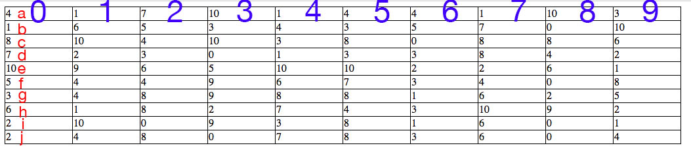

Vytvorenie tabuľky
Tabuľka sa vytvorí volaním funkcie "tableCreate(pocetRiadkov,pocetStlpcov,nazov);". Každá ďalšia tabulka musí obsahovať iný názov, aby nedošlo k vzájomnej
interakcie medzi tabuľkami.
Funkcie tabuľky
- Do tabuľky je možné zadávať vstupy pomocou kliknutia na danú bunku a následne je možné posúvať aktuálne editovateľnú bunku pomocou šípiek na klávesnici.
- Po dvojkliku na tabuľku sa aktuálna bunka označí. Po opatovnom dvojkliku na tu samú bunku sa bunka odznačí.
- Po kliku a potiahnutím myšou sa označia bunky. Označené bunky je možné vymazať stlačením klávesy 'backspace'. Po kliknutí na tabuľku sa bunky odznačia.
- Do jednotlivých buniek tabuľky je možné vložiť jednoduché vzorce. Ich syntax je podobná syntaxi programu Microsoft Excel a to nasledovná:
- Pozor! Indexuje sa od 0 !!! (viz obrazok)
- Suma: "=sum(a1,a2)" kde a oznacuje písmeno riadku a 2 číslo stĺpca bunky
- Priemer: "=average(a1,a2)" kde a oznacuje písmeno riadku a 2 číslo stĺpca bunky
- Vzorec: "=1+2" alebo "=a1+a2"
Po kliknutí do bunky, v ktorej sa nachádza vzorec dojde k odobraniu hodnoty a zobrazí sa daný vzorec čo značne zjednoduší jeho editáciu
- Pokiaľ dôjde k zmene hodnoty v odkazovaných bunkách tak sa tabuľka automaticky prepočíta.
